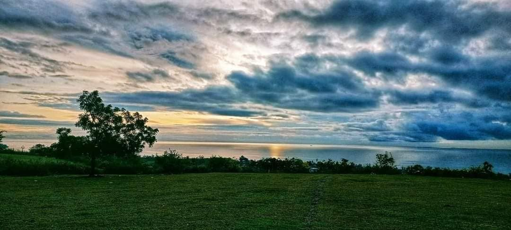
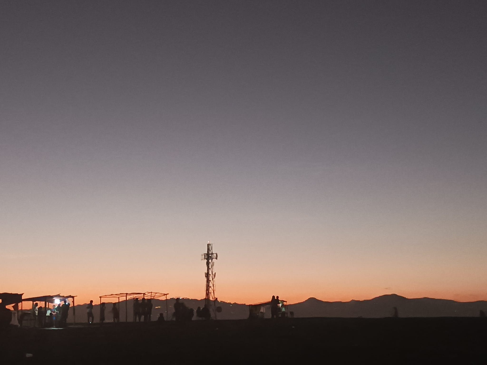
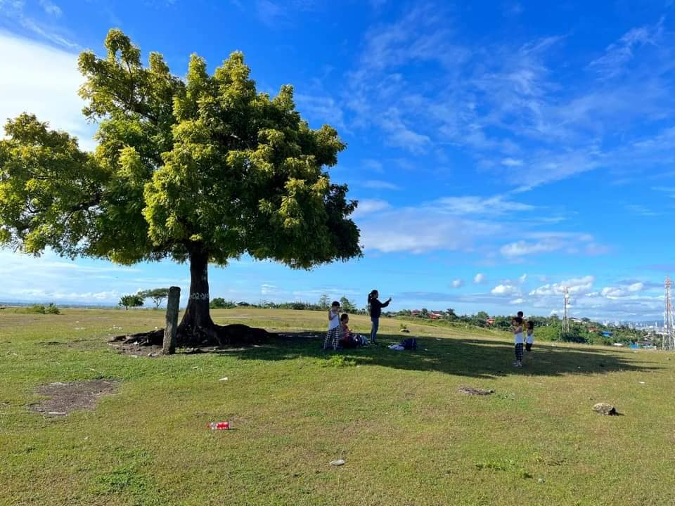
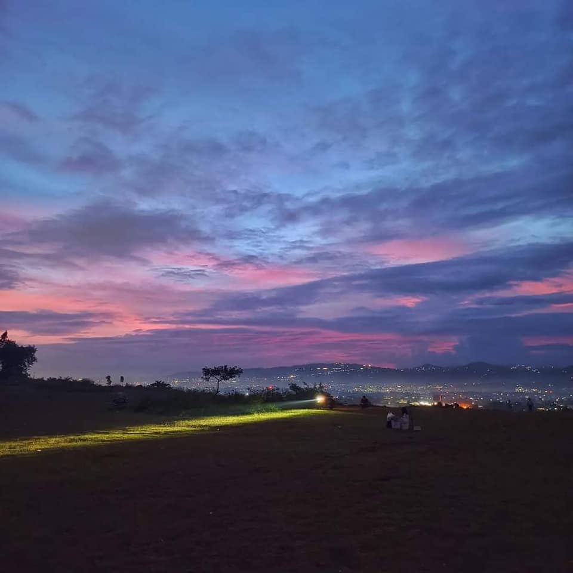
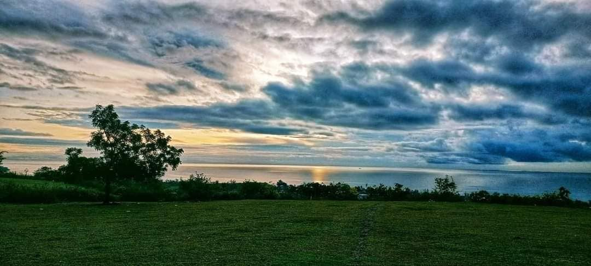
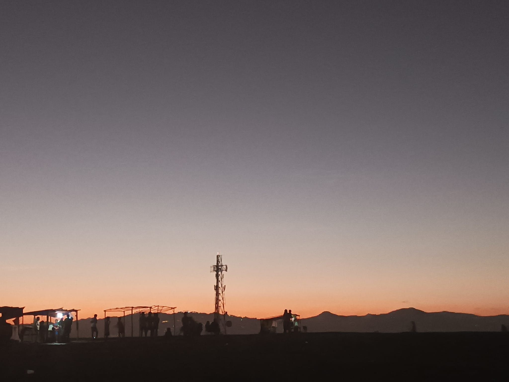
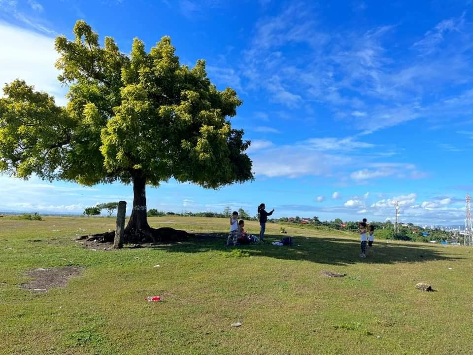
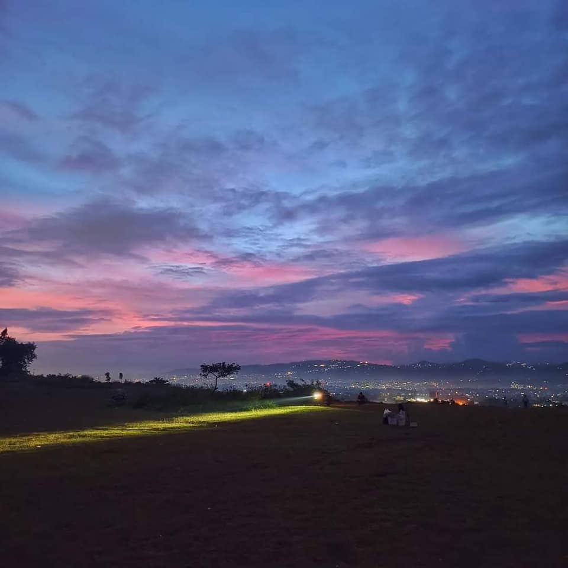

ABOUT THE PLACE
Apollo’s View in Liloan, Cebu, is a popular destination offering stunning panoramic views of the surrounding landscapes, including the lush greenery, coastline, and nearby islands. Perched on elevated terrain, it provides a serene environment ideal for relaxation, photography, and unwinding in nature. The spot is well-known for its picturesque sunsets, where visitors can enjoy vibrant hues painting the sky. Apollo’s View is often visited by locals and tourists alike who seek a tranquil escape or a scenic backdrop for picnics and gatherings.